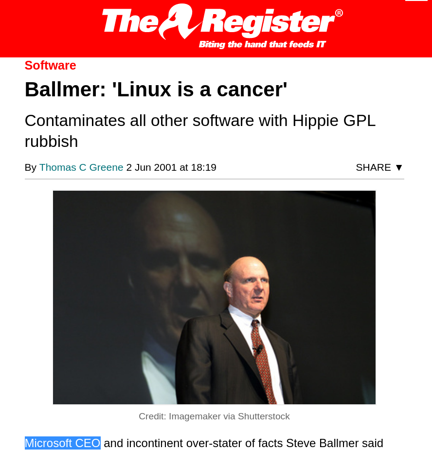
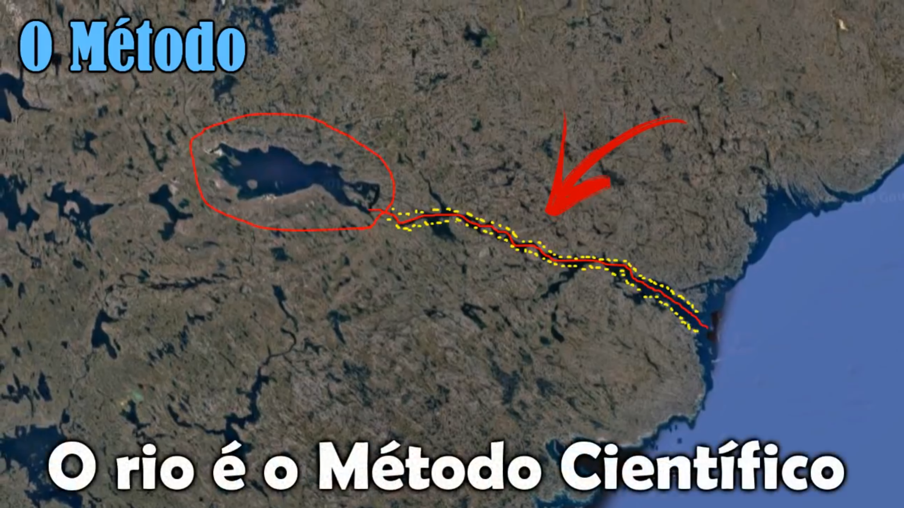
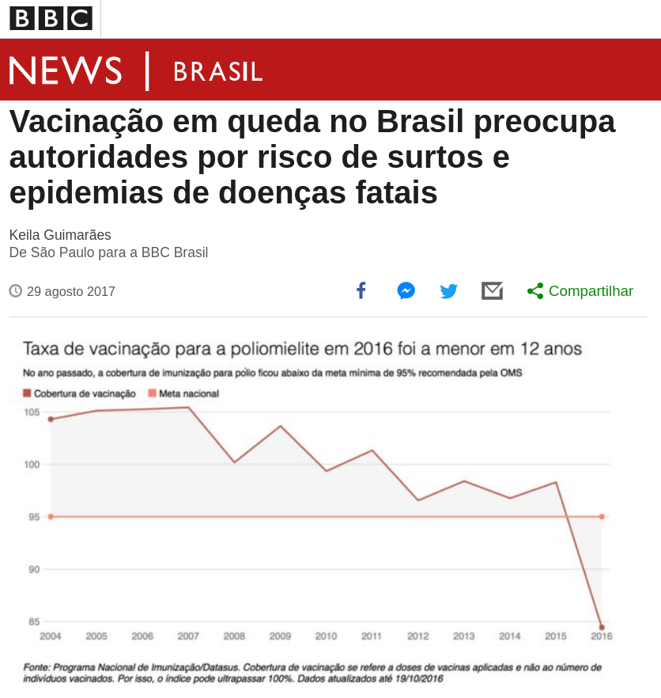
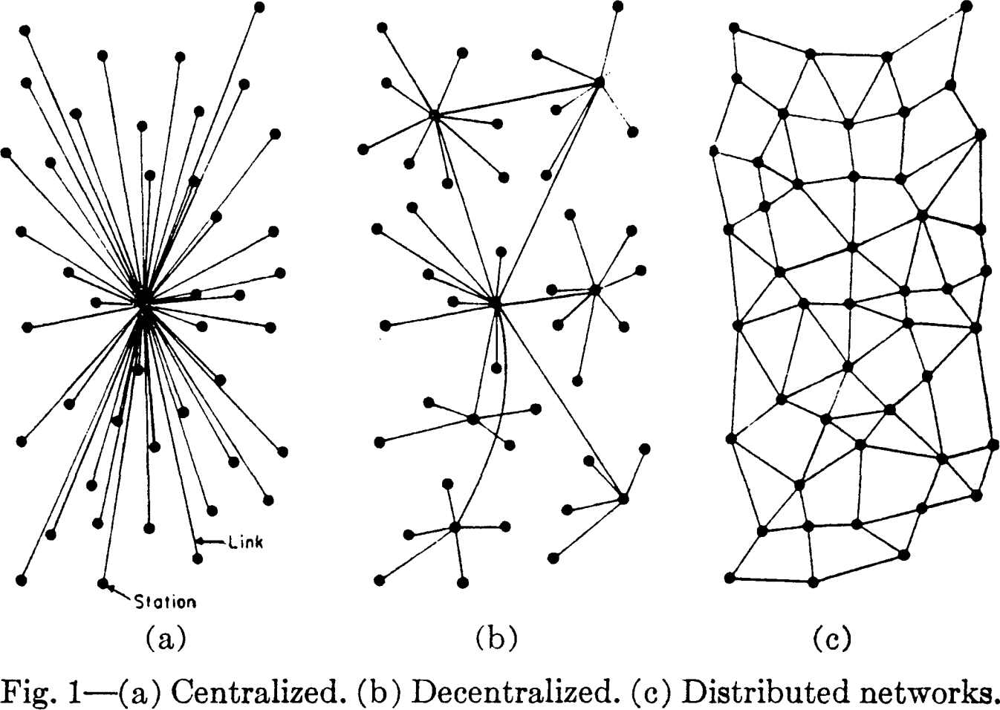

A era da pós-verdade: minhas reflexões e crenças
Turicas aka Álvaro Justen
PythonNordeste 2019
20 de julho de 2019
$ whoami
Turicas, prazer! =)
Sigam-me os bons:
{twitter,
github,
youtube,
slideshare,
instagram}
/turicas
turicas@brasil.io
Software Livre & Python
(desde 2004/2005)


2001
The Register
2016
Microsoft Cloud Blogs
Pseudociência: finge que é ciência, mas não é

- O conhecimento humano não precisa ser 100% científico
- É nociva
- (tem pelo menos mais 3 bem conhecidas)
A Ciência não busca a verdade
Busca descrever a nossa relaidade
A Verdade, por Estêvão Slow
Exemplo:
Movimento anti-vacinação
BBC Brasil
Deep fakes
Mark Zuckerberg ‘deepfake’ will remain online
Era da Pós-Verdade
Bem-vindas(os)! (:

por Martin Shovel
Topologias de rede
On Distributed Communications Networks, Paul Baran (1964)
Programação para jornalistas
3000+ inscritos!

Introdução à Programação: Python para Jornalistas
Maker: indo contra a alienação
#DIY (do-it-yourself) = curiosidade + ação

A Documentary on the Maker Movement
Facilitar a Transparência
“ Restringir acesso a dados públicos é elitizar a democracia. ”
Brasil.IO